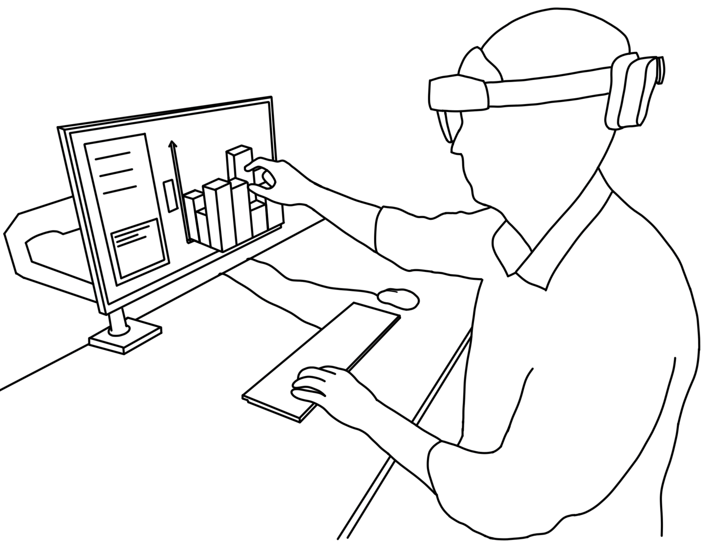

A Design Space For Data Visualisation Transformations Between 2D And 3D In Mixed-Reality Environments


Authors. Benjamin Lee, Maxime Cordeil, Arnaud Prouzeau, Bernhard Jenny, Tim Dwyer
Venue. CHI (2022)
Abstract. As mixed-reality (MR) technologies become more mainstream, the delineation between data visualisations displayed on screens or other surfaces and those floating in space becomes increasingly blurred. Rather than the choice of using either a 2D surface or the 3D space for visualising data being a dichotomy, we argue that users should have the freedom to transform visualisations seamlessly between the two as needed. However, the design space for such transformations is large, and practically uncharted. To explore this, we first establish an overview of the different states that a data visualisation can take in MR, followed by how transformations between these states can facilitate common visualisation tasks. We then describe a design space of how these transformations function, in terms of the different stages throughout the transformation, and the user interactions and input parameters that affect it. This design space is then demonstrated with multiple exemplary techniques based in MR.
Honourable Mention Award